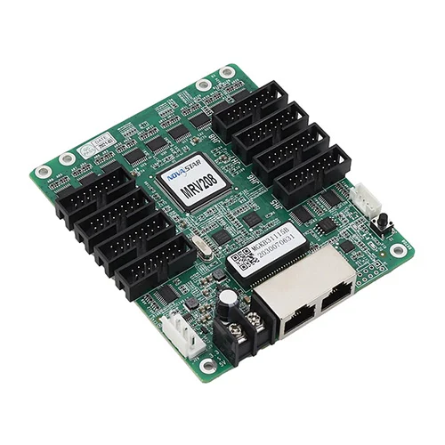

A Receiving Card, também chamada de “placa receptora” ou “placa mãe do gabinete”, é o componente responsável por receber e distribuir as informações que formam a imagem no painel de LED.
Ela recebe o sinal vindo da controladora principal (geralmente localizada fora do painel) por meio de um cabo de rede ou fibra óptica, e repassa esse sinal para os módulos de LED dentro do gabinete.
Além de repassar o sinal, a Receiving Card também interpreta os dados, sincroniza o conteúdo (vídeo, imagem, texto) com alta precisão e faz ajustes finos de brilho, cor, contraste e tempo de resposta.
Sem a Receiving Card, o gabinete não consegue funcionar — mesmo que os LEDs estejam bons, eles não “sabem” o que exibir.
Modelos mais avançados de Receiving Card permitem configurações via software, correção de falhas, calibração automática de brilho/cor e até backup de sinal em tempo real (redundância).
Marcas como Novastar, Colorlight e Linsn dominam o mercado nesse componente, e a compatibilidade com o restante da estrutura (controladora e módulos) é essencial.
